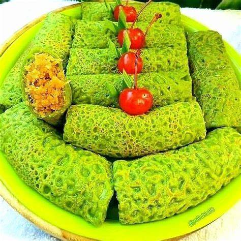

Resep kue basah Dadar gulung kelapa

Bahan-Bahan:
- 250 gr terigu
- 2 butir telur
- 1/2 sachet santan instan
- Sejumput garam
- Air kurleb 400ml (bisa disesuaikan dg ketebalan yg di inginkan)
- 1/4 butir kelapa parut yg masih muda
- Gula pasir 3sdm dan gula merah 1/2keping (sisir)
Langkah-Langkah:
- Langkah 1 :
- Pecahkan telur masukkan santan terigu dan air, aduk rata hingga tidak ada yg bergerindil, kemudian beri pasta pandan
- Langkah 2 :
- Masukkan garam lalu beri minyak goreng 1 sdm agar tidak lengket
- Langkah 3 :
- Panaskan teplon, kemudian cetak.. ulangi hingga adonan habis
- Langkah 4 :
- Larutkan gula pasir dan gula merah kemudian masukkan kelapa parut aduk rata hingga air menyusut dan tes rasa, jika kurang manis bisa dtambahkan gula.
- Langkah 5 :
- Ambil 1 lembar adonan yg sudah dicetak lalu beri isian unti kelapa sesuai selera kemudian gulung2.. ulangi hingga adonan habis